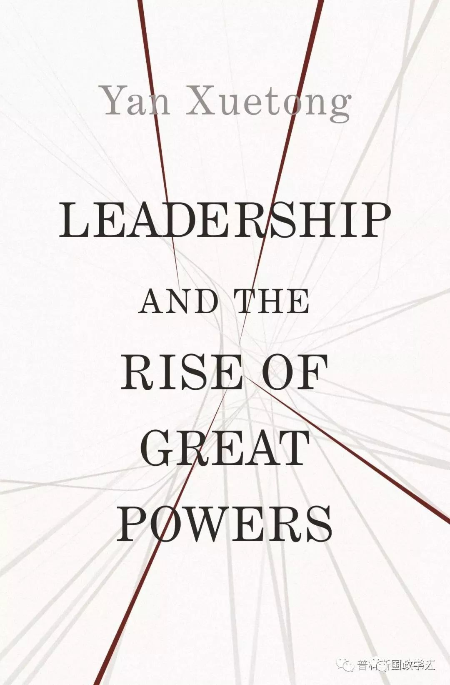

收录于合集

5月15日晚，阎学通教授携他的新书 _ Leadership and the Rise of Great Powers_ 在清华大学举办公开讲座以及现场签售，与Amitav Acharya 教授以及贝淡宁教授就“领导力与大国崛起”这一问题展开了深入交流。
PUP China，公众号：普林斯顿读书汇重磅活动∣阎学通新书发布：领导力与大国崛起
三张皮椅，几只话筒，阎学通、阿米塔·阿查亚（Amitav Acharya)、贝淡宁（Daniel A.Bell)，三位学术大咖谈笑风生，不时迸发出思想的火花。下面简要回顾一下几位老师的观点。
阎学通老师以近期热点中美贸易摩擦引入，他指出，所谓“贸易战”乃至“模式之争”都是表象，实质乃是中美之间领导力的交锋。领导力影响制度，制度通过领导力起作用。这也解释了为何在道义现实主义理论中，领导力被置于如此重要的地位。
目前，学界对现实主义的认识往往局限于结构对行为体的塑造和约束，而忽视了道义等理念性的因素。阎老师认为，这是对现实主义传统的曲解。事实上，诸如修昔底德、卡尔和摩根索等古典现实主义巨擘从未否认过道义在国际政治中的重要作用。
大国竞争，谁主沉浮？除却经济发展等传统的实力考量，起关键作用的因素是“领导力”(leadership)。它要求领导层为公为民，着眼全局，深化改革，树立战略信誉，增进国际福祉。阎老师特别强调，要区分以力服人和以德服人：以力服人，畏惧屈从，天下怨望；以德服人，心悦诚服，天下欣戴。回到先前的中美两国的模式之争，阎老师引导大家思考：使得发展模式符合道义的，究竟是制度还是领导力？孰高孰低，答案不言而喻。
阎老师谦称，书中的观点并非自己所创，而是对先秦诸子政治思想的梳理和提炼，颇有述而不作之意。他说，先秦诸子让他认识到：第一，政治领导力在大国竞争中起决定性作用，或可称为“政治决定论”（political determinism）。第二，政治领导力的强弱是相对的，取决于自身，也取决于对手。用管子的话来说，“国修而邻国无道，霸王之资也”。我们要尽可能地减少决策失误。
作为阎老师多年的朋友和忠实的读者，阿查亚老师则聚焦道义现实主义理论建设本身：探讨领导力转移的理论众多，是什么使得道义现实主义独特？他笑称，阎老师的书不是写给美国的，而是写给中国的领导层的。而且，要想理解阎老师的新作，需要先读一读阎老师2011年出版的Ancient ChineseThought, Modern Chinese Power。那本书系统梳理了先秦诸子的政治思想。阿查亚还提出，道义现实主义学说中的“道义”（moral）一词可以有多种解读，如治理性道义和工具性道义，公德与私德等等，相互之间可能存在冲突，应当如何调和兼容？另外，阎老师所潜心研究的先秦政治思想，广义上讲仍属华夏文明圈内的秩序观，然而当今世界则是多元文明的世界，脱胎于诸夏秩序（阿查亚原语“all- Chinese”）的道义领导力应以何种方式推行到多元文明的世界（multicivilizational world）。此外，阿查亚老师还提到了建设中国学派的问题。他认为，中国学派已现星火，但尚未形成燎原之势。
随后，主持人贝淡宁老师向阎学通老师提出了三个问题：首先，中国政治思想源远流长博大精深，为何单单选择借鉴先秦时期？其次，除发生战争外，为何对中美关系的其他方面持悲观态度？最后，如何培养我们未来的领导者？阎老师一一作出了明快的回答：选择先秦，是因为那个时代，轻利益，重理念，在治国韬略（statecraft）方面多有值得推敲挖掘之处。持悲观态度，是因为他本人是现实主义者，出于现实主义的基本假设，该派学者往往悲观。至于未来一代，他们在多元化的网络环境中耳濡目染，信息通达，视野宽阔，会自己成长。阎老师表示，授人以鱼不如授人以渔：不必越俎代庖，给学生灌输意识形态，而应该思考，如何培养学生独立思考的习惯和开放包容的胸襟。
学生们也踊跃提问，与三位老师就道义现实主义的概念界定、理论适用等问题进行探讨。一方面联系中美关系等当下热点，一方面批评文明冲突论、复合相互依赖理论等原有理论，阎老师进一步阐释了自己的观点。活动以阎老师的新书签售、读者互动作结。
整理 周心培（北京外国语大学在读本科生）
校对 裘谷城（北京外国语大学在读本科生）
曹诗佳（外交学院本科毕业生）

本书从道义的角度定义了政治领导的行为，特别是政府履行国内责任和维护国际战略信誉的能力。同时将个人、国家和体系层面的分析统一起来。作者深入分析了崛起国是如何通过重塑权力分配和规范来改变国际秩序的。此外，对于美国在经济、教育、军事、技术以及政治体制等方面保持稳定的情况下国际地位下降的原因，作者也从道义现实主义的视角提出了自己的观点。中国和美国为首的国际格局两极化不会导致另一场冷战，但他们的相互竞争将推动世界的中心从欧洲向东亚转移。
《国际政治科学》2018年第4期

阎学通（Yan Xuetong）
阎学通 ，中国外交政策、国家安全和中美关系领域的顶尖专家。他目前担任清华大学—卡内基全球政策中心管理委员会主席，清华大学当代国际关系研究院院长，Chinese Journal of International Politics主编。2008年，美国《外交政策》杂志将阎学通评为全球百大知识分子之一。2011年，阎学通与PUP合作出版的Ancient Chinese Thought, Modern Chinese Power创建了国际关系研究的“清华路径”，该书分析借鉴中国先秦思想，提出以“道义”为核心的政治领导力是国家实力的关键所在，是中国学界对全球国际关系学的重大贡献。2015年至今，阎学通为爱斯唯尔高被引政治学唯一学者。2018年，他被授予清华大学首批文科资深教授。阎学通是普林斯顿大学出版社中国学术顾问理事会成员。
更多阅读
【重磅速递】约瑟夫·奈：美国霸权的兴衰：从威尔逊到特朗普 | 国政学人
【重磅推荐】巴里·布赞：英国学派视角下的中国崛起 | 国政学人
【重磅速递】米尔斯海默：注定失败：自由主义国际秩序的兴衰 | 国政学人
【美国研究】IS杂志：为何美国的外交大战略如此稳定？| 国政学人
【英国脱欧】以欧盟为核心的多中心外交：脱欧后英国的欧洲外交战略 | 国政学人
【民族主义】江忆恩：中国的民族主义正在高涨吗？基于对北京群众的调查 | 国政学人